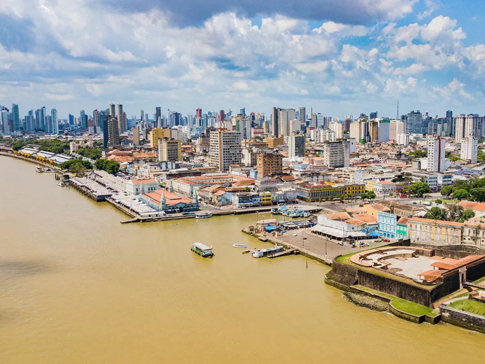

O Pará é um estado localizado na região Norte do Brasil e é conhecido por sua grande riqueza natural, cultural e histórica. Sua capital, Belém, é famosa pela culinária típica, pelos mercados tradicionais e pelas manifestações culturais da Amazônia. O estado possui uma vasta área de floresta amazônica, rios importantes e uma grande diversidade de fauna e flora. O Pará também se destaca pela economia baseada na mineração, agricultura, pesca e extrativismo vegetal. Entre as tradições culturais mais conhecidas está o Círio de Nazaré, uma das maiores festas religiosas do Brasil, realizada todos os anos em Belém. A culinária paraense é muito apreciada, com pratos típicos como tacacá, pato no tucupi e açaí, consumido de maneira tradicional na região.
